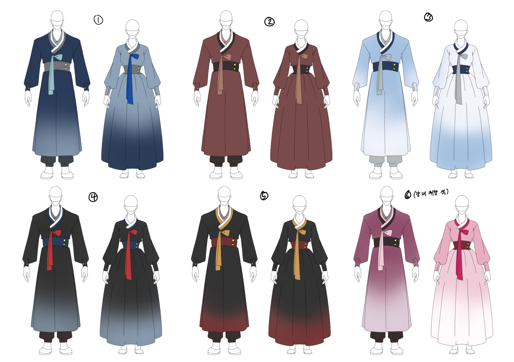

청년환생교육원
1.저승
청년환생교육원을 이해하기 위해서는 먼저 저승의 기본 구조를 알 필요가 있다. 환생원은 보편적인 학교라기보다는, 저승의 사후 행정 체계 안에 설치된 특수 교육·심사 기관에 가깝기 때문이다.
저승은 흔히 대중매체에서 묘사되는 천국이나 지옥의 이미지와는 다소 거리가 있다. 선한 자가 곧바로 보상받고 악한 자가 즉시 벌을 받는 공간이라기보다는, 사망자의 기록을 보존하고 심판, 유예, 환생, 잔류, 소멸 등을 관리하는 거대한 행정 세계에 가깝다.
다만 그렇다고 해서 차갑고 기계적인 관청만 존재하는 곳은 아니다. 저승에도 생활권이 있고, 행정기관이 있으며, 죽은 자들이 일정 기간 머무는 구역도 존재한다. 청년환생교육원은 그중에서도 심판이 유예된 청년 혼령들을 따로 수용해 재교육하고, 다음 생으로 보낼 만한지 판단하는 기관이다.
1.1.사후 행정 체계
사망한 인간이 저승으로 인도된 이후, 곧바로 최종 심판을 받는 것은 아니다. 사망자의 생전 행적, 사망 당시의 연령, 죽음의 정황과 기록의 오류 가능성, 타인과의 관계 등을 종합적으로 검토한 뒤 절차가 결정된다.
대부분의 사망자는 정해진 절차에 따라 기록을 확인받고 심판 단계로 넘어간다. 그러나 일부 혼령은 곧바로 판결을 내리기 어렵다고 판단되어 별도의 유예 처분을 받는다. 환생원의 원생들은 바로 이 유예 대상자 중에서도, 환생 가능성이 남아 있다고 분류된 청년 혼령들이다.
이 때문에 환생원 입학은 단순한 입학이 아니다. 다시 살아갈 가능성을 얻었다는 뜻인 동시에, 생전의 기록에 대한 최종 판단이 잠시 보류되었다는 의미이기도 하다.
이를 두고 항간에서는 환생원 입학을 살 기회로 보아야 하는지, 판결 유예로 보아야 하는지를 두고 의견이 갈린다. 실제로 환생원은 학교처럼 보이지만, 본질적으로는 사후 행정 절차의 일부라고 볼 수 있다.
1.2.이승과 저승
이승과 저승은 완전히 단절된 공간은 아니지만, 같은 원리로 움직이는 세계도 아니다.
이승에서는 시간, 육체, 사회적 지위, 재산, 가족관계 등이 개인의 삶을 구성하는 중요한 요소로 작용한다. 그러나 저승에서는 이승에서의 신분이나 재력보다 생전의 기록과 사망 이후의 절차가 더 직접적인 의미를 갖는다. 아무리 생전에 부유했거나 이름 있는 집안 출신이었다 해도, 저승 행정망에 등록되는 순간 대부분의 세속적 권한은 사라진다.
다만 생전의 모든 것이 무의미해지는 것은 아니다. 오히려 저승에서는 생전의 선택과 행적이 훨씬 더 직접적으로 기록되고 평가된다. 이승에서 덮였거나 잊힌 일도, 저승에서는 명부와 사망 기록, 과거행적 자료를 통해 다시 드러날 수 있다.
망자들이 가장 부담스러워하는 지점도 여기에 있다. 이곳에서는 과거를 완전히 숨기기 어렵다. 단지 당장 공개되지 않을 뿐.
1.3.저승시(冥界時)
저승에서는 이승과 다른 시간 체계가 적용된다. 이를 흔히 저승시(冥界時)라고 부른다.
저승 내부에서는 이승시(現世時)의 하루가 저승시(冥界時)의 1년에 해당한다는 말이 사실상 정설처럼 떠돌고 있다. 다만 이는 공식적으로 확인된 정보는 아니며, 저승의 모든 구역에 동일하게 적용되는지도 밝혀져 있지 않다. 저승의 행정기관, 생활권, 유예구역마다 시간 흐름이 다르게 조정된다는 설도 있다.
환생원 내부에서는 원생들의 빠른 적응과 생활 안정을 위해 이승시(現世時)의 시간 단위를 사용한다. 하루, 주, 월, 학기, 학년 단위가 존재하며, 인공 태양을 통해 낮과 밤도 구분된다. 수업, 식사, 자율 활동, 종례 등의 일과 역시 이승의 여느 기숙형 학교와 비슷하게 운영된다.
이는 원생들이 산 사람에 가까운 생활 감각을 유지하도록 하기 위한 조치에 가깝다. 원생들이 체감하는 하루는 이승시(現世時)의 하루처럼 구성되어 있지만, 실제 저승시(冥界時)의 흐름과 일치하지 않는다.
1.4.저승 생활권
환생원 바깥에는 일반 저승 생활권이 존재한다. 이곳은 심판을 기다리는 혼령, 저승에 잔류하게 된 자, 공무직으로 편입된 자, 차사와 행정 인력 등이 머무는 구역으로 알려져 있다.
저승 생활권은 이승의 도시나 마을과 비슷한 구조를 가진 곳도 있으나, 자세히 보면 산 사람의 세계와는 미묘하게 다르다. 저승의 거리는 이승에 비해 조도와 채도가 낮고, 이동 시 체감하는 거리감이 다르며 전체적인 분위기가 묘하게 처지는 감이 있다. 저승에 완전히 적응하지 못한 망자의 시선에서 보았을 때, 이러한 저승의 생활권에 대해 이승을 흉내 낸 다른 세계에 가깝다고 표현하곤 한다. 불쾌한 골짜기
환생원의 원생들은 대부분의 시간을 돔 내부에서 보내기 때문에, 저승 생활권을 직접 접할 기회가 많지 않다. 다만 언덕이나 돔 경계부에서는 바깥 풍경을 볼 수 있다. 이때 처음으로 자신이 정말 죽었다는 사실을 실감했다는 원생도 적지 않다고 한다.
1.5.유예구역
환생원이 위치한 곳은 저승환생공단 관할 제1유예구역이다.
유예구역은 아직 최종 심판을 받지 않은 혼령들을 일정 기간 관리하기 위한 저승의 특수 구역이다. 일반 저승 생활권과는 달리, 외부 출입이 제한되고 내부 환경이 별도로 조정된다. 환생원의 돔, 인공 태양, 기후 조절 장치, 원생 동결 시스템 역시 이러한 유예구역의 성격과 관련된 시설로 보인다.
유예구역에 속해 있는 혼령들은 완전히 저승에 편입된 존재도, 다시 이승으로 돌아갈 존재도 아니다. 환생원의 원생들은 죽은 자이지만, 동시에 다음 생으로 넘어갈 가능성을 보류받은 상태이다.
이 애매한 위치 때문에 환생원은 학교, 보호시설, 심사기관, 행정기관의 성격을 동시에 갖게 된다.
1.6.사기(死氣)
사기(死氣)란 죽은 자의 기운을 뜻한다.
저승에 오래 머무는 혼령은 시간이 지날수록 사기(死氣)의 영향을 받는다. 이는 단순히 기운이 빠지거나 감정이 무뎌지는 정도가 아니라, 사고방식과 감각 자체가 산 사람의 것과 다른 방향으로 변하는 현상에 가깝다.
사기(死氣)에 잠식된 혼령은 생전의 욕망, 애착, 두려움, 미련 등을 이전과 같은 방식으로 느끼지 않게 된다. 인간으로서 당연하게 여겼던 감정의 결이 차갑게 가라앉고, 산 자와는 다른 질서에 익숙해지는 것이다.
그러나 환생원의 원생들은 원내 보호 조치와 동결 시스템을 통해 입학 당시의 정신적·육체적 상태에 가깝게 유지된다. 이 덕분에 저승 생활자 중에서도 비교적 산 사람에 가까운 감각을 유지할 수 있다.
문제는 이 동결이 영구적이지 않다는 점이다. 실제로 동결 처리 동의서 전문에는 환생 실패 혹은 중도 포기, 퇴학 등의 이유로 환생원을 떠나 저승 생활권에 편입되면 보호 효과는 점차 약화된다는 내용이 있다.[1]
원생들이 환생에 매달리는 이유도 단순히 다시 살고 싶어서만은 아니다. 저승에 남는 시간이 길어질수록 현재의 인간적 본성과 사고방식을 유지하지 못할지도 모른다는 공포가 있기 때문이다.
2.개요
저승환생공단 산하의 청년 대상 환생 적합도 평가 및 재교육 기관. 약칭은 환생원.
이승시(現世時) 기준 2014년경 설립되었으며, 저승 행정 체계 내에서는 비교적 신설 기관에 해당한다. 사망 당시 기준 만 18세 이상 29세 이하의 청년 혼령 중, 내부 심사를 거쳐 환생 가능성이 있다고 판단된 이들을 선발해 3년간 기숙형 교육 과정을 실시한다.
외견상으로는 이승의 기숙형 고등학교나 연수원과 유사하다. 원생들은 원복을 입고 수업을 들으며, 생활관에서 생활하고, 정해진 시간표에 따라 일과를 보낸다. 그러나 본질은 사후 심판을 유예받은 혼령들을 대상으로 다음 생의 기회를 주기 위한 적합성을 심사하는 복합 교육·행정 기관이다. 말하자면 학교의 탈을 쓴 유예 심사기관에 가깝다.
환생원 입학은 다시 살아갈 가능성을 얻는다는 뜻인 동시에, 생전의 죄와 사망 전후의 기록에 대한 심판이 일정 기간 보류된다는 뜻이기도 하다. 이 때문에 원생들은 이곳을 단순한 학교처럼 여기면서도, 완전히 학교로만 받아들이지는 못한다.
사이버 캠퍼스, 까돌이 AI, 포인트 시스템 등 저승 내에서도 비교적 현대적인 시스템을 적극적으로 도입하고 있다. MZ교육원 이 탓에 기존 저승 행정 체계 안에서도 꽤 실험적인 기관으로 취급되는 듯하다.[2]
3.연혁
3.1.설립 이전
청년 혼령을 대상으로 한 환생 유예 제도 자체는 환생원 설립 이전에도 존재했던 것으로 보인다. 다만 당시에는 별도의 교육기관이 마련되어 있지 않았고, 개별 심사나 임시 보호 절차에 가까운 방식으로 운영되었다고 한다.
이 시기에는 사망자의 기록과 행적을 중심으로 환생 가능성을 판단했기 때문에, 당사자가 스스로를 돌아보거나 재교육을 받을 기회는 제한적이었다. 특히 청년 사망자의 경우 죽음 직후의 충격, 생전 관계에 대한 미련, 사고 경위의 복잡성 등으로 인해 일반 심판 절차에 바로 편입하기 어렵다는 문제가 있었다고 전해진다.
3.2.설립 이후
앞서 기술했듯 환생원은 이승시(現世時) 기준 2014년경 설립된 것으로 알려져 있다. 저승 기준으로는 비교적 신설 기관이며, 기존 저승 심판 체계에서 꽤 이질적인 시도로 평가된다.
설립 초기에는 교육과정, 원생 관리 방식, 환생 적합도 평가 기준이 현재보다 불안정했던 것으로 보인다. 특히 평가기간의 방식은 몇 차례 수정된 것으로 추정되지만, 세부 내용이 기밀에 해당하기 때문에 정확한 변천사는 확인하기 어렵다.
사이버 캠퍼스와 까돌이 AI 역시 개원 당시부터 현재와 같은 형태였던 것은 아닌 듯하다. 초기 기수 원생들은 오프라인 공지와 생활지도과 안내에 의존했으나, 이후 원생 관리 시스템이 개편되면서 온라인 기반 체계가 도입되었다.
3.3.현재
현재의 환생원은 교육기관이라기보다는 교육 기능을 갖춘 복합 심사기관에 가깝다. 원생들은 학교와 비슷한 환경에서 생활하지만, 출결, 상담 이력, 기록 열람 내역, 원내 시스템 사용 내역 등이 필요에 따라 보존된다.
4.상징 및 복장
4.1.교표와 상징물
환생원의 교표는 명부문, 연꽃, 구름 문양을 중심으로 구성된다.
명부문은 저승의 기록과 절차를 뜻한다. 연꽃은 죽음 이후 다시 피어나는 생을 상징한다. 구름은 이승과 저승의 경계, 그리고 아직 확정되지 않은 유예 상태를 의미한다.
대표 색상은 짙은 남색과 회청색이다. 짙은 남색은 저승의 밤과 기록의 무게를, 회청색과 옅은 청색은 유예, 정화, 새로운 삶의 가능성을 나타낸다.
교목은 회화나무, 교화는 연꽃이다. 교목인 회화나무는 오래된 관청의 질서와 학문의 공간을 연상시키며, 교화인 연꽃은 죽음 이후에도 다시 피어날 수 있는 생의 가능성을 상징한다.
4.2.교훈과 슬로건
교훈·슬로건 표 [ 펼치기 · 접기 ]
| 구분 | 내용 |
|---|---|
| 교훈 | 진심 · 염원 · 책임 |
| 슬로건 | 과거를 딛고, 새 삶으로. |
| 홈페이지 카피 | 과거와 미래의 교차로. |
진심은 자신의 생전 기록과 죽음을 외면하지 않는 태도를, 염원은 다시 살아가고자 하는 의지를, 책임은 과거의 삶과 다음 생에 대한 책임을 의미한다.
슬로건은 환생원이 내세우는 교육 방향에 가깝고, 홈페이지 카피는 환생원이 과거의 기록과 미래의 가능성이 동시에 놓이는 장소라는 점을 강조한다.
4.3.원복
환생원 원생들은 입학과 동시에 원복을 지급받는다. 원복은 현대식 교복과 한복의 디자인 요소를 절충한 형태로 디자인되었다. 학년에 따라 원복의 색 조합이 다르며, 일부 장식에는 연꽃과 구름 문양이 사용된다.

원복 구분표 [ 펼치기 · 접기 ]
| 구분 | 설명 |
|---|---|
| 생활복 | 정복에서 두루마기가 생략된 형태를 말한다. 원내 공식 행사나 평가기간을 제외하고 두루마기 착용은 학생의 자유에 맡긴다. |
| 정복 | 입학식, 단체 조례, 공식 행사에서 착용한다. 평가기간 시 정복(두루마기) 착용이 필수이다. |
| 개인 조정 가능 범위 | 원복 장식끈, 명패줄 등 일부 소품 교체는 암묵적으로 허용된다. |
원복은 생전의 빈부격차나 사회적 신분을 드러내지 않도록 전원에게 동일한 기준으로 지급된다. 환생원 안에서는 생전의 재력이나 지위가 직접적인 의미를 갖지 않기 때문에, 원복은 원생들이 같은 출발선에 놓였다는 상징으로도 기능한다.
종종 평가기간 직전에 장식끈을 새로 사거나, 기념품샵에서 명패줄을 바꾸는 경우도 있다. (일종의 부적의 역할이라고 볼 수 있다.)
4.4.까돌이
까돌이는 환생원의 마스코트이다. 회색과 검은색이 섞인 까마귀 형태이며, 다리에 붉은 실 장식이 묶여 있다.
공식 홍보물에서는 둥글고 단순화된 모습으로 그려지는 경우가 많다. 원생들 사이에서는 귀엽다는 반응과 묘하게 불길하다는 반응이 갈린다. 특히 붉은 실 장식을 두고 이승과 저승의 인연을 뜻한다는 해석이 있으나, 공식 설정인지는 알 수 없다.
까돌이는 단순 마스코트에 그치지 않고 AI 시스템으로도 운영된다. 자세한 내용은 하단 까돌이 AI 문단 참고.
5.학사 과정 및 진로
5.1.기본 교육과정
환생원의 교육과정은 기본적으로 3년제로 운영된다. 원생들은 저승의 기본 규칙, 환생 절차, 공동체 생활, 생전 기록의 검토와 성찰 등을 배운다. 또한, 생전 필수 교육에 부재가 있는 원생들을 위하여 이승의 필수 교육과정을 선택적으로 이수할 수 있다.
가장 큰 특징은 학생 자신의 생전 기록과 과거의 선택이 사실상 교재로 사용된다는 점이다. 단순히 바른 생활을 가르치는 것이 아니라, 자신이 어떤 삶을 살아왔는지, 무엇을 외면했는지, 다시 살아간다면 무엇을 다르게 할 수 있는지를 마주하게 한다. 그러나 이러한 생전의 기록은 대부분 민감한 주제이기에 철저히 타인에게는 공개되지 않는다. 만, [3]
학년별 교육과정 표 [ 펼치기 · 접기 ]
| 학년 | 중심 내용 | 주요 특징 |
|---|---|---|
| 1학년 | 사망 사실 수용, 저승 환경 적응 | 저승 생활 규칙, 원내 시설 이용법, 명패 사용법, 생활관 규정 등을 배운다. |
| 2학년 | 생전 관계 정리, 과거 기억 성찰 | 생전 인간관계, 미련, 사망 전후 정황을 구체적으로 마주한다. |
| 3학년 | 환생 적합도 평가 준비 | 명부기록관 열람, 상담지원센터 이용, 평가기간 대비 활동이 늘어난다. |
말하자면 도덕 교과서가 아니라 자기 인생 전체가 교재인 셈이다.
5.2.환생 적합도 평가
환생 적합도 평가는 3학년 말에 치러지는 최종 관문이다.
공개된 자료에 따르면, 평가는 단순히 선량한 사람을 가려내는 절차가 아니다. 원생이 자신의 생전 기록을 어떻게 받아들이는지, 타인의 삶을 쉽게 단정하지 않는지, 다시 살아갈 기회가 주어졌을 때 무엇을 다르게 선택할 수 있는지 등을 종합적으로 심사한다.
5.2.1.평가기간
평가기간의 세부 시험 방식과 심사 기준은 철저한 기밀이다. 평가기간 중에는 매일 당일 공지가 이루어지며, 원생들은 안내에 따라 각종 절차에 참여한다.
일부 평가는 원생들이 그것을 평가라고 인식하지 못한 상태에서 이루어진다는 소문도 있다. 이 때문에 평가기간에는 평소의 대화나 선택까지 신경 쓰는 원생이 많다. 반대로 어차피 전부 기록될 것이라면 평소처럼 행동하겠다는 식으로 체념하는 경우도 있다.
평가기간 관련 기밀을 유출할 경우 불이익이 주어진다고 알려져 있으나, 실제 징계 사례가 공개된 적은 없다. 사례가 존재하지 않는 것인지, 혹은 기록 자체가 공개되지 않는 것인지는 불명이다.[4]
5.2.2.재이수
환생 적합도 평가에서 선발되지 못한 학생이 곧바로 심판 절차로 넘어가는 것은 아니다.
한번 환생원에 입학한 학생은 최대 3회까지 환생에 도전할 수 있다. 평가에서 탈락한 학생은 마지막 1년 과정을 다시 이수한 뒤, 다음 기수의 최종학년 학생들과 함께 평가기간에 재응시할 수 있다.
다만 재도전 기회는 무제한으로 주어지지 않는다. 세 차례의 기회를 모두 사용한 뒤에도 환생 대상자로 선발되지 못할 경우, 더 이상 환생원 소속으로 환생에 도전할 수 없다.
재이수생은 원생들 사이에서 묘한 위치에 놓인다. 평가기간을 이미 경험했다는 점 때문에 후배들에게 정보원처럼 여겨지기도 하지만, 정작 평가 내용은 말할 수 없기 때문에 뜬구름 잡는 조언만 남기는 이가 많다. 소위 말하는 꼰대
5.3.저승 공무직 테크
환생에 실패하거나 환생을 포기한 학생이 모두 곧바로 심판만을 기다리는 것은 아니다.
3년 교육과정을 정상적으로 이수한 학생 중 일정 조건을 충족한 경우, 저승 공무직으로 편입될 수 있는 기회가 주어진다. 이른바 저승 공무직 테크다.
이 경우 개인의 생전 범죄 이력(밝혀지지 않은 범죄 포함)과 정규 교육과정 중 태도에 따라 일정 기간 봉사 과정을 거친 뒤, 행정 보조, 기록 관리, 생활 지원 등 하위 직무의 인턴 또는 수습 과정에 배치될 수 있다.
차사를 지망하는 학생은 이와는 또 다른 별도의 과정을 거치는 것으로 알려져 있다. 차사는 일반 공무직보다 권한과 책임이 큰 직무이기 때문에, 행정 보조나 생활 지원직과 같은 절차로 선발되지는 않는다.
다만 환생원 자체의 역사가 짧은 탓에, 현재까지 환생원 출신이 정식 차사가 된 사례는 확인되지 않았다.[5] 공무직 루트를 통해 저승 행정기관에 편입된 사례는 일부 존재하는 것으로 알려져 있으나, 대부분은 행정 보조나 기록 관리 계열로 분류된다.
5.4.중도 포기와 퇴학
환생원 과정 도중 원생이 스스로 환생 포기 서류를 제출하고 교육과정을 중단하는 것도 가능하다. 이 경우 더 이상 환생원 소속으로 환생에 도전할 수 없다.
다만 3년 과정을 정상적으로 이수한 뒤 환생을 포기하는 것과, 교육과정 도중 중도 포기하는 것은 다르게 취급된다. 중도 포기자는 환생원 교육과정을 끝까지 이수한 것으로 인정되지 않으며, 공무직 편입 자격도 얻기 어렵다.
퇴학 역시 존재한다. 환생원은 유예 기관이지만 모든 행위를 허용하는 장소는 아니다. 중대한 원칙 위반, 타 원생에 대한 직접적 위해, 심사 절차 방해, 기밀 유출 등이 퇴학 사유가 될 수 있다고 알려져 있다.
퇴학은 단순한 전학이나 자퇴가 아니다. 환생원에서 제공하는 유예와 재교육의 기회 자체를 잃는 조치에 가깝다. 원생들 사이에서 퇴학이 유독 무겁게 받아들여지는 이유도 여기에 있다.
중도 포기자와 퇴학 대상자는 환생원 소속을 벗어나면 곧바로 유예되었던 전생 심판 과정을 거치게 된다.
6.시설
환생원 부지는 기숙형 학교와 연수원을 합친 형태로 설계되어 있다. 교육시설, 행정시설, 기록시설, 생활시설, 상담시설, 제한구역이 하나의 캠퍼스 안에 배치되어 있으며, 원생들은 대부분의 시간을 원내에서 보낸다.
대부분의 시설은 원생 전용 명패를 통해 출입 및 이용 내역이 기록된다.
6.1.부지 구조
환생원 부지는 기숙형 학교와 연수원을 합친 형태에 가깝다. 중앙에는 환생행정관과 도서관, 강당이 배치되어 있고, 생활관과 학생식당은 원생들의 동선이 짧도록 한쪽 구역에 모여 있다. 명부기록관과 학생자료 기록실은 비교적 조용한 기록 구역에 위치하며, 심사기록실과 차사연수동은 원생의 일반 동선에서 떨어진 제한 구역 쪽에서 더 가깝다.
전체 부지는 반구형 돔 내부에 들어와 있으며, 돔 바깥으로는 저승 생활권이 이어진다.
6.1.1.돔
환생원 전체를 둘러싼 반구형 투명 돔은 환생원 시설의 가장 큰 특징이다. 돔은 단순한 천장이 아니라 기후 조절, 출입 통제, 보호 결계, 사기(死氣) 차단 기능을 동시에 수행하는 핵심 시설로 알려져 있다.
돔 내부에는 인공 태양과 기후 조절 장치가 설치되어 있어, 원내에서는 이승과 어느 정도 유사한 낮과 밤, 계절감, 기온이 유지된다.[6] 원생들이 비교적 인간적인 생활 리듬을 유지할 수 있는 것도 이 돔 덕분이다.
다만 돔 바깥으로 보이는 저승 생활권은 전혀 다른 분위기를 띤다. 유계정에서 돔 밖을 내려다본 원생 중 일부는 이때 처음으로 자신이 정말 죽었다는 사실을 실감한다고 한다.
6.1.2.구역 구분
환생원 내부는 겉보기에는 평범한 캠퍼스처럼 보이지만, 실제로는 출입 권한이 꽤 세밀하게 나뉘어 있다.
원생이 자유롭게 이용할 수 있는 곳은 생활관 공용 구역, 학생식당, 매점, 도서관 일반 열람 구역, 일부 강의실 정도다. 명부기록관이나 상담지원센터처럼 절차를 거쳐 이용할 수 있는 시설도 있고, 차사연수동이나 심사기록실처럼 원칙적으로 접근할 수 없는 시설도 있다.
원생들 사이에서 이러한 제한 구역을 두고 여러 소문이 떠돌지만, 실제 제한 구역 무단 출입이 들켰을 때에 처분이 어떻게 이루어지는지는 공식적으로 공개되어 있지 않다.
6.2.교육 및 행정 시설
6.2.1.환생행정관
환생행정관은 환생원의 본관에 해당하는 건물이다. 교육원 행정, 수업, 주요 공지, 평가 관련 절차가 이루어지는 중심 시설로, 일반 학교의 본관과 공공기관 청사를 섞어 놓은 듯한 인상을 준다.
층별 안내 [ 펼치기 · 접기 ]
- 1층: 중앙 로비, 안내데스크, 교무과, 생활지도과, 보건실이 있으며, 원생들이 가장 자주 방문하는 층이다.
- 2층: 일반 강의실과 세미나실, 조례실이 있어 수업과 학년별 안내가 진행된다.
- 3층: 환생심사국과 교직원 사무실이 있어 평가기간이 가까워질수록 출입 통제가 강화된다.
- 4층: 원장실과 부원장실이 있는 것으로 알려져 있으나, 일반 원생이 원장이나 부원장을 직접 마주하는 경우는 거의 없다고 한다.
환생행정관은 입학식, 주요 공지, 징계 안내, 평가기간 관련 통보 등이 이루어지는 장소이기 때문에 마냥 편한 공간은 아니다. 특히 생활지도과나 환생심사국에서 호출이 올 경우, 대체로 좋은 일일 가능성이 낮다는 식의 말이 돈다.
6.2.2.도서관
도서관은 저승의 역사, 환생 사례, 교육 자료, 저승 생활 안내서 등이 소장된 시설이다. 원생들의 자율학습과 과제 수행에 자주 사용된다.
층별 안내 [ 펼치기 · 접기 ]
- 1층: 종합자료실과 대출 데스크가 있으며, 일반 도서 대출과 공용 열람이 이루어진다.
- 2층: 개인 열람실, 스터디룸, 과제 자료실이 있어 수업 준비나 자율학습에 자주 사용된다.
- 3층: 환생 사례 자료실과 저승 사회 자료실, 제한 자료실이 있는 것으로 알려져 있다.
3층 제한 자료실은 별도 허가가 필요한 구역이다. 환생 실패 사례, 심판 관련 기록, 저승 사회의 비공개 자료 등이 보관되어 있다는 소문이 있으나, 실제 소장 자료의 범위는 공개되어 있지 않다.
6.2.3.강당
강당은 대규모 단체 조례, 입학식, 설명회, 특별교육, 최종 발표 등이 진행되는 시설이다. 환생행정관의 강의실보다 훨씬 많은 인원을 수용할 수 있어, 여러 학년이나 기수 전체가 한꺼번에 모일 때 주로 사용된다.
층별 안내 [ 펼치기 · 접기 ]
- 1층: 대강당과 무대, 객석이 있다.
- 2층: 음향실과 조명실, 준비실이 있다.
- 3층: 소강당과 대기실이 있다. 소규모 설명회나 행사 대기 장소로 사용된다.
강당은 평범한 행사 공간이기도 하지만, 평가기간 관련 공지나 최종 발표가 이루어지는 장소이기도 하다.
6.2.4.체육관
체육관은 체육 수업과 단체 활동이 이루어지는 시설이다. 신체 단련보다는 원생들이 인간 시절의 생활 리듬과 활동 감각을 유지하도록 돕는 목적이 강하다.
층별 안내 [ 펼치기 · 접기 ]
- 1층: 메인 체육관과 운동기구실, 탈의실이 있다.
- 2층: 관람석과 소규모 연습실이 있다.
- 3층: 창고와 장비 관리실, 다목적실이 있다. 다목적실에서는 주로 체육 수업, 소모임 활동 등이 이루어진다. 운동기구 대여나 다목적실 예약에는 원생 전용 명패가 필요하다.
6.3.기록 시설
6.3.1.명부기록관
명부기록관은 원생들의 생전 기록, 사망 기록, 과거행적 자료를 보존하는 시설이다. 환생원 내에서도 비교적 폐쇄적인 분위기를 띠는 건물로 알려져 있다.
층별 안내 [ 펼치기 · 접기 ]
- 1층: 기록 열람 창구와 대기실, 일반 열람실이 있으며, 원생이 공식 절차를 통해 접근할 수 있는 거의 유일한 구역이다.
- 2층: 명부기록과 사무실과 생전 기록 보관실이 있다.
- 3층: 사망 기록 보관실과 과거행적 기록실, 제한 열람실이 있다.
- 4층: 심사 연계 자료실과 비공개 기록 보관 구역이 있으며, 원생 접근이 엄격히 제한된다.
일반 열람 신청에는 원생 전용 명패가 필요하다. 다만 열람 가능한 자료는 제한적이며, 타인의 기록을 임의로 열람하는 것은 불가능하다. 본인 기록이라 하더라도 모든 내용이 공개되는 것은 아니다.
6.3.2.학생자료 기록실
학생자료 기록실은 환생원 입학 이후의 기록을 보관하는 시설이다. 명부기록관이 생전과 사망 전후의 기록을 다룬다면, 학생자료 기록실은 환생원 내부에서의 생활 기록을 다룬다.
층별 안내 [ 펼치기 · 접기 ]
- 1층: 입학 자료 보관실, 학생 기본 기록실, 민원 창구가 있다. 원생이 직접 방문할 수 있는 곳도 주로 이 1층 창구이다.
- 2층: 생활 기록 보관실과 출결 및 교육과정 기록실이 있다.
- 3층: 평가 자료 보관실과 교직원 열람실이 있다.
출결, 과제 제출, 생활관 벌점, 상담 이력, 기록 열람 내역, 원내 시스템 사용 내역 등이 필요에 따라 보존된다. 모든 기록이 학생에게 공개되는 것은 아니며, 일부 자료는 평가 과정에서만 활용되는 것으로 보인다.
6.3.3.심사기록실
심사기록실은 환생원 내에서도 가장 보안 등급이 높은 시설로 알려져 있다. 최종 환생 심의 자료와 평가기간 관련 핵심 자료가 보관되는 곳으로 추정된다.
건물 자체는 크지 않지만, 지하 시설이 깊다는 소문이 있다. 일반 원생들에게 심사기록실의 정확한 구조가 공개되어 있지는 않다. 다만 지하 2층에는 심사 자료 보관실이, 지하 1층에는 과거 기억 자료실과 비공개 기록실이 있다는 말이 돈다. 지상 1층은 출입 통제실과 보안 대기실로 사용되는 것으로 알려져 있다.
원생 전용 명패로는 출입할 수 없으며, 일반 원생이 직접 들어갈 수 있는 경우는 거의 없다. 교직원 중에서도 접근 권한이 제한되어 있는 것으로 알려져 있다.
원생들 사이에서는 본인도 기억하지 못하는 죽음 직전의 기록이 이곳에 남아 있다는 소문이 있다.
6.4.생활 및 편의 시설
6.4.1.생활관
생활관은 원생들이 거주하는 기숙사 시설이다. 2인실에서 4인실 위주로 구성되어 있으며, 룸메이트는 생활지도과에서 배정한다. 특별한 사유가 없는 한 학생이 직접 선택할 수 없다.
층별 안내 [ 펼치기 · 접기 ]
- 1층: 생활관 관리실, 공용 라운지, 우편함, 면담실이 있다.
- 2, 3층: 여학생 생활구역으로 쓰인다.
- 4, 5층: 남학생 생활구역으로 쓰인다.
생활구역 내에는 각각 세탁실과 건조실, 공용 화장실, 탕비실이 있다.
탕비실 내에는 공용 냉장고와 전자레인지, 정수기, 싱크대, 분리수거함과 공구함 등이 구비되어 있다.
층별 안내 [ 펼치기 · 접기 ]
- 6층: 개인 휴식실, 생활지도과 당직실이 있는 관리층이다.
생활관 출입에는 원생 전용 명패가 필요하다. 기본적으로 본인이 배정된 층과 공용 구역만 출입할 수 있으며, 타 생활구역 출입은 제한된다.
1층 공용 라운지는 생활관의 중심 공간이다. 평가기간이 가까워지면 라운지는 비공식 정보 교환의 중심지처럼 변한다.
6.4.2.학생식당
학생식당은 원생들의 식사가 이루어지는 시설이다. 식사와 수면이 죽은 자에게 생존 필수 행위인지는 명확하지 않으나, 환생원에서는 이승과 유사한 생활 리듬을 유지하기 위해 정해진 시간에 식사를 제공한다.
층별 안내 [ 펼치기 · 접기 ]
- 1층: 아침, 점심, 저녁 식사가 제공된다. 메뉴 구성은 이승의 학교 급식이나 기숙사 식당과 유사한 편이다. 사망 이후에도 급식을 먹어야 한다는 점을 황당해하며 식사를 거르는 원생들도 꽤 있다.
- 2층: 분식코너와 간이 식사 공간, 음료 자판 구역이 있다. 특히 분식코너는 원생들 사이에서 인기가 높다. 대표 메뉴는 떡볶이, 유부우동, 계란김밥이다. 평가기간이 가까워질수록 이곳에서 묘하게 진지한 대화를 하는 원생들이 늘어난다.
6.4.3.매점
매점은 간식, 음료, 필기구, 생활용품 등을 판매하는 시설이다. 학생식당과 가까운 위치에 있으며, 쉬는 시간이나 저녁 시간대에 이용자가 많다.
환생원 내부에서는 이승의 화폐가 사용되지 않는다. 매점 결제는 수업, 과제, 교육과정 내 활동 등을 통해 얻은 포인트나 상품권으로 이루어진다. 결제 확인에는 원생 전용 명패가 사용된다.
매점의 인기 품목으로는 복숭아 아이스티가 있다. 다만 까돌이 AI에 따르면 정식 판매명은 냉도향차라고 한다. 아무리 봐도 복숭아 아이스티인데 굳이 한자식 이름을 붙인 점이 묘하게 킹받는다.
6.4.4.기념품샵
기념품샵은 환생원 내부에 위치한 소규모 상점이다. 학교 굿즈, 문구류, 원복 소품, 까돌이 관련 상품 등을 판매한다.
대표 상품으로는 까돌이 스티커, 원복 장식끈, 환생원 로고 노트, 명부문 책갈피, 구름 문양 배지 등이 있다. 대부분 실용성보다는 기념품에 가까운 물건이다. 가격이 싸진 않다. 별것도 아닌 물건들에 까돌이 그림이나 교표 띡 박아놓은 정도로 가격대가 상승하는 기현상. 실제로 문구류나 필기구는 매점이 훨씬 싸다.
환생에 성공하면 가져갈 수 없을 가능성이 높다고 한다.
평가기간 직전에는 원복 장식끈이나 까돌이 굿즈를 사는 원생이 늘어난다고 한다. 대체 왜?
6.5.상담 및 지원 시설
6.5.1.상담지원센터
상담지원센터는 학생 상담, 저승 생활 적응 상담, 환생 실패 이후의 진로 상담 등을 담당하는 시설이다.
층별 안내 [ 펼치기 · 접기 ]
- 1층: 접수실, 대기실, 일반 상담실이 있으며, 비교적 가벼운 생활 상담과 상담 예약이 이루어진다.
- 2층: 개인 상담실, 단체 상담실, 안정실이 있다.
- 3층: 진로실이 있다. 저승 생활 적응이나 환생 후, 혹은 실패 시의 진로에 관련된 다양한 자료와 팜플렛 등이 비치되어 있다.
평상시에는 조용한 시설로 인식되지만, 평가기간이 가까워질수록 방문자가 늘어난다. 상담 내용은 기본적으로 비공개이나, 누가 상담지원센터에 자주 드나드는지를 은근히 신경 쓰는 경우가 많다.
6.6.야외 및 외곽 시설
6.6.1.중정
중정은 환생원 중앙에 위치한 야외 공간이다.
인공 연못, 벤치, 산책로가 조성되어 있으며, 환생행정관, 도서관, 학생식당 사이에 위치한다.
중앙에는 얕은 인공 연못이 있으며, 주변에는 벤치와 산책로가 배치되어 있다. 연못 주변에는 연꽃 문양을 본뜬 장식물이 설치되어 있고, 밤 시간대에는 낮은 조명이 켜진다.
6.6.2.유계정
유계정은 환생원 부지 경계에 가까운 산책 구역이다. 이곳에서는 투명 돔 너머의 실제 저승 생활권을 육안으로 확인할 수 있다.
유계정에서는 환생원을 둘러싼 돔의 경계가 비교적 선명하게 보인다. 원생이 임의로 돔 바깥으로 나갈 수는 없으며, 외출이나 이관 절차가 필요한 경우에는 별도의 허가와 차사진의 동행이 요구된다. 그러나 환생원 밖으로 외출 시, 동결 처리가 옅어지는 부작용이 있어 웬만하면 권장되지 않는다.
6.6.3.돔 정비구역
돔 정비구역은 환생원 부지를 둘러싼 반구형 돔을 관리하는 시설이다. 공식적으로는 학생 출입 금지 구역이다.
돔은 단순한 천장이 아니라 환생원 내부의 날씨, 빛, 온도, 출입 경계, 보호 조치를 조절하는 핵심 시설이다. 따라서 돔 정비구역은 환생원 유지에 필수적인 시설로 분류된다.
6.7.제한 시설
6.7.1.차사연수동
차사연수동은 원내 상주 교직원과 차사진의 업무 공간이자 연수 시설이다. 일반 원생의 출입은 원칙적으로 금지되어 있다.
층별 안내 [ 펼치기 · 접기 ]
- 지하: 장비 보관실과 비상대응실이 있다.
- 1층: 차사 교육실과 교직원 대기실이 있다.
- 2층: 차사 사무실과 회의실이 있다.
- 3층: 교직원 숙소와 휴게실이 있다.
원생 전용 명패로도 출입할 수 없으며, 특별한 사유 없이 접근할 경우 생활지도과 또는 차사진의 제지를 받는다.
무단 진입 시 퇴학, 기억 조정, 심사 불이익 등이 발생한다는 소문이 있다. 다만 공식적으로 확인된 바는 없다.
7.원내 시스템
7.1.원생 전용 명패
원생 전용 명패는 입학과 동시에 지급되는 신분 확인용 패이다. 이승의 학생증과 유사한 물건으로, 학생의 이름, 기수, 기본 식별 정보 등이 등록되어 있다.
명패는 단순한 신분증이 아니라 원내 시설 이용과 출입 인증에도 사용된다. 생활관 출입, 도서관 대출, 매점 결제, 명부기록관 일반 열람 신청, 상담지원센터 예약 확인, 사이버 캠퍼스 공용 단말 로그인 등에 필요하다.
다만 명패가 있다고 해서 모든 구역에 출입할 수 있는 것은 아니다. 차사연수동, 심사기록실, 명부기록관 제한 구역, 도서관 제한 자료실 내부 등은 별도 허가가 필요하다.
명패를 분실할 경우 생활지도과에 신고해야 하며, 재발급 전까지 일부 시설 이용이 제한될 수 있다. 이 때문에 명패 분실은 상당히 번거로운 일로 여겨지니 웬만하면 명패 관리를 잘하는 것이 좋다.
7.2.포인트와 상품권
환생원 내부에서는 이승의 화폐가 통용되지 않는다. 원생들은 수업, 과제, 교육과정 내 활동 등을 통해 포인트나 상품권을 얻고, 이를 매점, 기념품샵, 일부 시설 예약, 장비 대여 등에 사용한다.
이는 생전의 재력이나 사회적 지위가 환생원 생활에 직접적인 영향을 미치지 못하도록 하기 위한 장치이기도 하다. 생전에 부유했거나 높은 사회적 지위를 가졌던 학생도 환생원 내부에서는 동일한 기준으로 생활해야 한다.
입학 초기에 생전 배경을 내세우는 학생이 드물게 나타나기도 하지만, 환생원 안에서는 실제 영향력을 갖기 어렵다. 저승에서는 통장 잔고나 집안 배경보다 원내에서의 행동과 선택이 더 직접적으로 기록되기 때문이다.
7.3.사이버 캠퍼스
사이버 캠퍼스는 개인에게 지급되는 모바일 기기 및 원내 공용 PC 등을 통해 접속할 수 있는 전산망이다. 학사 공지, 과제 제출, 생활 안내, 기숙사 공지, 상담 예약, 익명 게시판 등의 기능을 제공한다.
학사 공지에는 수업, 조례, 평가기간 안내 등이 올라오며, 과제 제출과 피드백 확인도 이곳에서 이루어진다. 상담지원센터 예약과 생활관 공지 확인 역시 사이버 캠퍼스를 통해 처리된다.
익명 게시판(일명 익게)은 원생들 사이에서 대나무숲과 비슷한 역할을 한다. 평소에는 일상적인 글이나 잡담이 많지만, 평가기간이 가까워지면 소문, 정보 공유, 특정 사건에 대한 추측이 늘어나는 편이다.
공식적으로는 원생 편의 시스템이지만, 실제로는 원내 여론이 가장 빠르게 움직이는 공간이기도 하다. 일부 게시글은 삭제되거나 캡처본만 남는 경우가 있어, 평가기간에는 게시판을 둘러싼 갈등이 발생하기도 한다.
7.4.까돌이 AI
까돌이 AI는 환생원에서 운영하는 학사 지원용 인공지능 시스템이다. 까마귀를 단순화한 외형에 붉은 실 장식이 묶인 모습으로 디자인되어 있으며, 환생원의 마스코트처럼 인식되기도 한다.
주요 기능은 일정 안내, 과제 확인, 시설 안내, 공지 전달, 원내 생활 관련 질의응답 등이다. 학생들은 사이버 캠퍼스, 공용 단말, 개인 단말과 유사한 인터페이스를 통해 까돌이에 접속할 수 있다.
까돌이는 기본적으로 친절하고 정중한 말투를 사용하지만, 학생들 사이에서는 답변이 묘하게 신경을 건드린다는 평도 있다.
환생 여부를 묻는 질문을 하는 경우, 가능성은 열려 있다는 식의 원론적인 답변을 한 뒤 미제출 과제 목록을 함께 띄워주는 식이다.
또한 원장이나 부원장의 정체에 대해 질문하면 매번 답변을 회피하는 것으로 알려져 있다. 주로 열람 권한이 없거나 공식적으로 공개된 내용이 아니라는 식으로 안내한다고 한다.
8.생활
8.1.일과
환생원에서의 생활은 이승의 기숙형 학교와 유사하다. 원생들은 정해진 시간에 기상하고, 조례를 통해 하루 일정을 확인하며, 수업과 자율 활동, 식사, 종례를 거쳐 하루를 마무리한다.
일과표 [ 펼치기 · 접기 ]
| 시간대 | 내용 |
|---|---|
| 08:00~09:00 | 기상, 식사, 조례 |
| 09:00~12:00 | 정규 수업 |
| 12:00~13:00 | 학생식당 이용 |
| 13:00~17:00 | 수업, 상담, 자율 활동 |
| 17:00~19:00 | 식사, 생활관 복귀 |
| 19:00~22:00 | 과제, 자율학습, 생활관 활동 |
| 22:00~24:00 | 종례 및 생활관 점검 |
식사와 수면은 죽은 자에게 생존 필수 행위라기보다는, 그저 생활 감각을 유지하는 장치에 가깝다. 그러나 환생원 안에서는 이를 거의 이승의 학교생활처럼 철저히 운영한다.
평상시에는 비교적 안정적인 일과가 유지되지만, 평가기간이 가까워지면 공지 방식과 활동 내용이 달라진다. 당일 공지로 일정이 바뀌는 경우가 늘어나며, 매일 아침 사이버 캠퍼스와 까돌이 공지를 통해 변경 사항이 공지되니, 평소에 공지를 잘 확인하는 습관을 들이는 것이 좋다.
8.2.기숙사 생활
생활관에서는 룸메이트와 함께 생활하며, 공용 공간에서는 다른 원생들과 교류할 수 있다.
룸메이트는 생활지도과에서 배정한다. 특별한 사유가 없는 한 원생이 직접 선택할 수 없으며, 룸메이트 관계는 원내 생활에 적지 않은 영향을 준다. 성격이 잘 맞으면 3년 내내 가장 가까운 사람이 되기도 하지만, 반대의 경우에는 생활관 자체가 평가보다 먼저 찾아오는 고난이 되기도 한다.
8.3.원생 문화
환생원은 전원이 죽은 자라는 특수한 조건을 제외하면, 의외로 학교 같은 문화가 많다. 원생들은 과제에 시달리고, 매점 인기 메뉴에 집착하며, 생활관 라운지에서 시간을 보내고, 사이버 캠퍼스 익명 게시판에서 시답잖은 이야기를 나누기도 한다.
다만 모든 문화의 밑바탕에는 환생 적합도 평가가 깔려 있다. 평범한 농담이나 소모임도 평가기간이 가까워지면 정보 교환, 견제, 동맹 관계로 변질되는 경우가 있다.
생전의 기억과 사망 경위가 원생마다 다르기 때문에, 서로의 과거를 묻는 일은 조심스러운 편이다. 친해진 뒤에도 사망 원인이나 생전 가족 관계를 직접적으로 묻는 것은 실례로 여겨진다. 물론 친한 사이에서는 결국 다 말하게 되는 경우도 많다.
8.4.비공식 모임
환생원에는 공식 학생회가 존재하지 않는다. 학생 간 서열이나 대표 권한이 과도하게 형성되는 것을 방지하기 위한 조치로 알려져 있다. 다만 원생들이 오랜 기간 기숙 생활을 하는 만큼, 비공식적인 모임이나 느슨한 파벌은 자연스럽게 생기는 편이다.
환생 스터디는 최종 환생에 목적을 가진 열정 있는 학생들의 모임이다. 주로 함께 수업 내용의 예습과 복습, 평가기간에 대한 정보를 공유하며 좋은 영향을 주고받기 위한 취지이다. 그러나 평가기간이 가까워지면 분위기가 꽤 예민해져, 단순 정보 공유와 견제의 경계가 흐려지기도 한다.
냉도향차회는 학생식당 2층이나 매점 근처에서 냉도향차를 사 들고 모이는 원생들을 가리키는 말이다. 처음에는 단순한 친목 모임에 가까웠으나, 시간이 지나며 원내 소문이 빠르게 오가는 자리로 인식되었다. 이름이 가벼운 것에 비해 의외로 민감한 이야기가 오간다고 한다. 현재는 익게에 교내에서 도는 소문에 대한 정보 공유를 할 때 쓰이는 은어로도 사용된다. 냉도향차회 ㄱ? ㄴㄷㅎㅊ 모집. 복숭아 하자. 복숭아 먹자. 등 다양한 변형이 있다…
재이수생 테이블은 평가기간을 한 번 이상 경험한 재이수생들이 주로 앉는 학생식당 2층의 특정 자리에서 유래한 표현이다. 실제로 고정 좌석이 지정된 것은 아니지만, 원생들 사이에서는 어느 정도 통용되는 말이다. 현재는 재이수생이 모여있거나, 재이수생 자체를 통칭하기 위한 호칭으로 사용되기도 하며, 경우에 따라 그들을 조롱하기 위한 멸칭으로 사용되기도 한다. 사실상 대부분이 후자의 의미로 사용되는 경우가 많다.
9.운영
9.1.조직
환생원의 운영은 원장과 부원장을 중심으로 교무과, 생활지도과, 환생심사국, 명부기록과, 학생자료 기록실, 상담지원센터, 차사진 등이 담당한다.
원장실에서 교육원 전체를 총괄하는 것으로 알려져 있으나, 원장의 정체와 실제 상주 여부는 불명이다.
- 원장실: 명목상 교육원 전체를 총괄하는 부서로 알려져 있으나, 원장의 정체와 실제 상주 여부는 불명이다.
- 부원장실: 원장 보좌 및 실무 총괄을 담당하는 것으로 보이지만, 부원장 역시 정체는 불명이다.
- 교무과: 교육과정, 수업, 출결, 과제, 조례 및 종례를 관리한다.
- 생활지도과: 생활관, 규정 위반, 원생 간 분쟁, 안전 관리를 담당한다.
- 환생심사국: 환생 적합도 평가와 최종 선별 절차를 담당하는 핵심 부서이다.
- 명부기록과 / 학생자료 기록실: 명부기록과는 생전 기록, 사망 기록, 과거행적 자료를 관리하며, 학생자료 기록실은 환생원 입학 이후의 생활 기록을 담당한다.
- 상담지원센터 / 차사진: 상담지원센터는 사망 사실 수용, 저승 생활 적응, 환생 실패 이후 진로, 공무직 연계 상담 등을 맡는다. 차사진은 원생 인도, 이동 통제, 질서 유지, 비상 상황 대응을 담당한다.
9.2.차사
차사는 저승의 공무원으로, 사망자의 인도와 관리, 저승 질서 유지, 각 기관의 실무를 담당한다.
환생원에 배정된 차사들은 교직원과 유사한 역할을 수행하며, 학생들에게는 선생이나 담당자처럼 인식된다. 다만 이들이 인간 교사와 같은 존재라고 보기는 어렵다. 차사들은 인간의 윤리와 완전히 동일한 기준이 아니라, 저승의 법과 절차, 환생원 내부 규정에 따라 판단한다.
환생원의 차사들은 대체로 사무적이고 엄격한 태도를 보이지만, 모든 차사가 원생들에게 무관심한 것은 아니다. 일부 차사는 원생들의 성장을 지켜보며 조언을 건네기도 하고, 일부 차사는 철저히 기록과 절차만을 중시하기도 한다.
차사들은 교원증 대신 저승 기관에서 발급한 신분패를 소지한다. 이 신분패는 저승 내 권한을 증명하는 물건이며, 원생들이 함부로 만질 수 없다.
9.3.기록 관리
환생원은 교육기관인 동시에 기록기관이다. 원생의 출결, 과제, 상담 기록, 기록 열람 내역, 생활관 규정 위반, 원내 시스템 사용 내역 등은 필요에 따라 보존된다.
- 출결 기록: 출결 기록은 교무과와 학생자료 기록실에서 관리한다.
- 생활 기록: 생활 기록은 생활지도과와 학생자료 기록실에 남는다.
- 상담 기록: 상담 기록은 상담지원센터에서 관리하되 기본적으로 비공개이다.
- 생전 기록: 생전 기록은 명부기록과가 관리한다.
- 평가 자료: 환생 적합도 평가에 직접 활용되는 자료는 환생심사국과 심사기록실에서 다루는 것으로 알려져 있다.
- 공개 범위: 모든 기록이 원생에게 공개되는 것은 아니며, 일부 기록은 생활지도나 상담 목적에 사용되고, 일부 기록은 환생 적합도 평가 과정에서만 활용되는 것으로 보인다.
- 원내 인식: 원생들 사이에서는 환생원에서 아무것도 하지 않는 것조차 기록된다는 말이 있다. 과장 섞인 표현이지만, 원내 생활 대부분이 어떤 방식으로든 기록될 수 있다는 인식 자체는 널리 퍼져 있다.
9.4.평가기간 운영
환생 적합도 평가기간에는 평소보다 많은 부서가 동시에 움직인다. 교무과는 일정과 공지를 담당하고, 생활지도과는 원생들의 생활 질서와 돌발 상황을 관리한다. 환생심사국은 평가 절차를 총괄하며, 명부기록과와 학생자료 기록실은 필요한 기록을 제공한다.
차사진은 평가기간 동안 원생들의 이동, 집합, 규정 위반, 긴급 상황을 통제한다. 상담지원센터 역시 평가기간 전후로 이용률이 크게 증가한다.
학생들에게 평가기간의 세부 내용은 사전에 공개되지 않는다. 매일 주어지는 안내에 따라 절차가 진행되며, 일부 평가는 원생들이 그것을 평가라고 인식하지 못한 상태에서 이루어지는 것으로 알려져 있다.
10.여담
- 중정의 인공 연못에 포인트 상품권이나 동전을 던지면 환생 가능성이 오른다는 미신이 있다. 공식적으로 금지된 행위는 아니지만, 청소를 담당하는 차사들은 달가워하지 않는다고 한다.
- 까돌이 AI에게 관련 질문을 하는 경우, 환생 적합도 점수와 연못 투척 행위 사이의 상관관계는 확인되지 않았다는 식으로 답한다고 한다.
- 환생원에는 일명 개구멍이라고 불리는 비공식 통로가 있다는 소문이 있다. 가장 자주 언급되는 위치는 생활관 뒤편 세탁실 옆 관리용 통로와 중정 뒤편 돔 정비구역이다. 유계정 끝에도 비슷한 통로가 있다는 말이 있으나, 실제로 돔 외부로 나갈 수 있는 통로는 아닌 것으로 보인다. 대부분은 보일러실이나 외곽 설비실로 이어지는 관리 동선에 가깝다. 원생들 사이에서는 실제 탈출구라기보다는, 몰래 모이거나 조용히 빠져나가는 장소를 가리키는 은어처럼 사용된다.
- 매 기수마다 생활관 6층과 관련된 괴담이 생긴다. 비어 있는 방에서 인기척이 났다거나, 개인 휴식실에 들어간 학생이 한동안 보이지 않았다는 식이다. 대부분 확인되지 않은 뜬소문이다. 이미 죽었는데 귀신 얘기를 하는 아이러니…
- 심사기록실에는 원생 본인도 기억하지 못하는 죽음 직전의 기록이 보관되어 있다는 소문이 있다. 특히 사고사나 자살, 타인과 얽힌 사망 사건의 경우, 본인이 인지하지 못한 마지막 순간의 정황까지 남아 있다는 말이 돈다. 실제로 그런 기록이 존재하는지, 존재한다면 어떤 방식으로 보관되는지는 확인되지 않았다.
- 유계정에서 아주 드물게 이승의 흔적을 볼 수 있다는 말이 있다. 고향의 불빛, 가족의 목소리, 사망 직전의 풍경, 생전 자주 걷던 길 같은 것을 보았다는 증언이 있으나, 내용이 서로 일치하지 않는다. 상담지원센터에서는 이를 기억 잔류 현상 또는 저승 환경에 대한 심리적 반응으로 설명하는 듯하다. 다만 실제로 본 원생들은 대체로 자세한 이야기를 꺼리는 편이라고 한다.
11.기타
- 생전의 재력이나 사회적 지위는 환생원 안에서 거의 의미가 없다. 이승에서 아무리 부유했거나 이름 있는 집안 출신이었다 해도, 저승에서는 통장 잔고나 부모의 직함이 따라오지 않기 때문이다. 원생들 사이에서도 생전 배경을 내세우는 태도는 대체로 좋게 받아들여지지 않으며 심지어는 이런 이들을 대놓고 무시하는 원생들도 있다.
- 원장과 부원장의 정체를 두고 염라와 관련된 존재라는 소문이 돌지만, 공식적으로 확인된 바는 없다. 애초에 이승의 상식으로 저승의 직위와 권한을 정확히 이해하기 어렵다는 의견도 있다.
- 환생원이 비교적 신설 기관인 탓에, 저승 내부에서도 이 제도를 완전히 신뢰하지 않는 이들이 있다고 한다. 특히 기존의 심판 절차와 인과응보 원칙을 중시하는 일부 차사들은 환생원의 방식을 지나치게 인간 중심적인 유예 제도로 보는 듯하다.
- 환생원 제도를 지지하는 이들은 청년 혼령의 죽음과 선택을 단순한 결과만으로 판단해서는 안 된다고 본다. 생전의 기록뿐 아니라, 죽음 이후 자신의 삶을 어떻게 마주하는지도 심사의 일부가 되어야 한다는 입장이다.
- 환생에 성공하는 것만이 정답인지에 대한 논쟁도 존재한다. 누군가는 다시 살아가기를 간절히 원하고, 누군가는 죽음 이후에야 비로소 자신을 돌아보게 된다. 또 다른 누군가는 이승으로 돌아가는 것보다 저승에 남는 편이 낫다고 생각하기도 한다
- 결국 환생원에서 가장 자주 반복되는 질문은 환생 여부 그 자체에 대한 물음이다. 다시 살고 싶은지, 다시 살아도 되는지, “다시 산다면 달라질 수 있는지”에 대한 질문이 환생원 생활 전체를 관통한다고 볼 수 있다.
- [1] 또한 처음 동결 처리를 받은 이후 시간이 지날수록 사기가 짙어진다는 말이 있다. 이로 인하여 종종 상급생이나 재이수생에게 문의가 들어오기도 하나, 어째서인지 환생원에서는 이 문의에 대한 답변을 하지 않는다.
- [2] 저승 내부에서도 환생원의 환생 제도에 대한 평가가 갈린다. 환생원 측은 이러한 논란에 대해 별다른 공식 입장을 밝히지 않고 있다.
- [3] 까돌이 AI에게 특정한 질문을 통해 다른 원생의 생전 기록을 파낼 수 있다는 이야기가 있다.
- [4] 몇 차례 평가 방식 유출의 움직임이 보인 적도 있지만 그럴 때마다 유출자는 쥐도새도 모르게 사라졌다. 그 이유는 불명.
- [5] 그도 그럴 것이, 이승의 창작물 속 차사의 보편적 설정과 같이, 차사는 단순 공무직과는 차원이 다른 교육 기간을 가질 것이라는 의견이 저승 내에서 지배적이다. 이에 대해 정확히 공개된 정보는 없지만, 평소 차사들의 묘한 분위기와 행동 특성으로 인해 생긴 소문 내지 낭설. 그렇다고 당사자들에게 물을 수도 없는 게, 차사들은 업무상 자신의 생전 정보나 시기를 공개하는 것이 금지되어 있으며 이를 어길 수 없도록 금제가 걸려 있다고 한다.
- [6] 대체로 생활하기에 쾌적한 수준의 날씨가 유지되며, 덥거나 추운 날씨가 있어도 살짝 습하거나 쌀쌀한 정도이다. 기온은 쾌적하게 유지되는 반면, 비나 눈, 아지랑이 등의 현상과 식물들의 변화는 사계절의 변화를 모두 담고 있다 보니 이것이야말로 이상향의 환경이라고 볼 수도 있겠다.